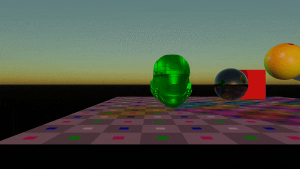
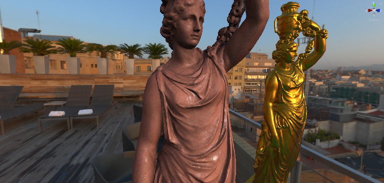
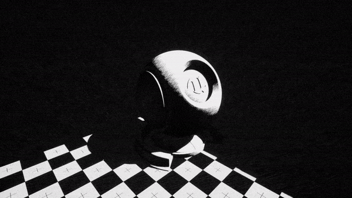
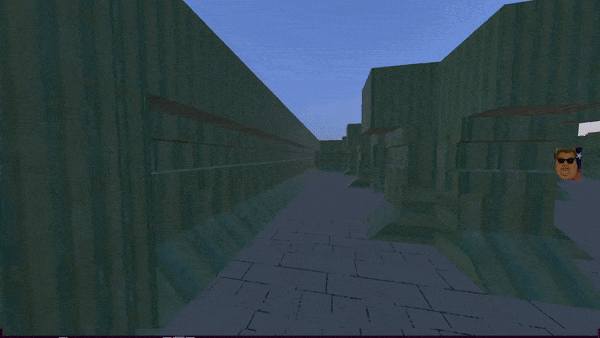
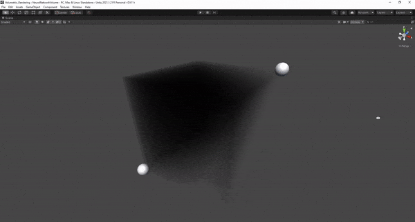
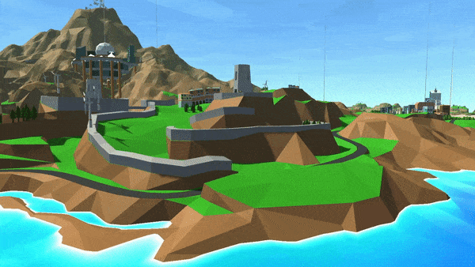
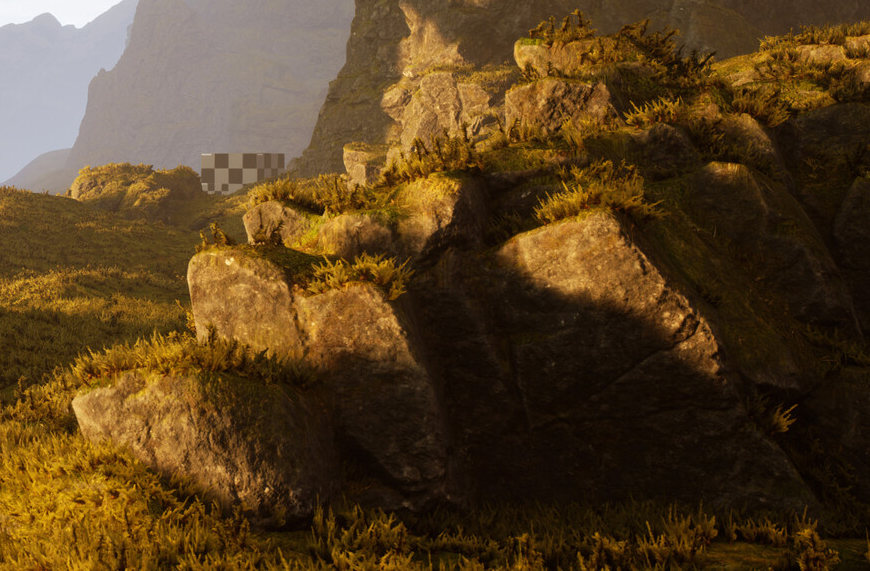
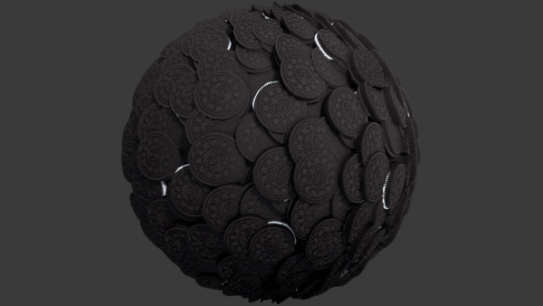

Multi-Threaded CPU Raytracing
This was the last project for my Advance Tech module. The task was to create a C++ ray-tracer with features like bounding volume hierarchy,
multi-threading, image exporting, 3D mesh loading, materials, textures loading etc. You can find the repository for this project here.

Clay render using a Multi-Layered BRDF
Physically based clay rendering using a Multi-layered BRDF with standard PBR features like Image Based Lighting (IBL) for the first layer.
Each BRDF layer uses the Cook-Torrance BRDF. More information can be found here.

Non-Physically Based Rendering
An exploration into Non-Physically Based Rendering techniques to create different art styles like halftone, hatching, cartoon etc.
The project explores using surface shaders and post-processing to create these art styles and effects and combine them together using a stencil buffer
to create new effects and styles. The project can be found here

DirectX First Person Shooter
A First Person Shooter (FPS) inspired by older FPS games like Doom, Half Life and Quake. This was developed using DirectX 11 and features
map loading, custom 3D models, physically Based Rendering (PBR).
The project can be found here.

Rendering Volumetric Density using a Neural Network
Add some text here

Kojima Wars
This project is a reimagining of Herzog Zwei. The project was developed by 40+ people using the Unity engine.
My role mainly consisted of designing the level design and creating effect like water using shaders.

Rock Shaders
This was my first project using the Unreal Engine 5 (UE5). It explores creating a rock shader that renders the same consistent detail across different sized rocks
without losing detail or having a repeating texture pattern. This project was originally developed in UE4 but was ported over to UE5 for the new lighting.
The renders can be found here.

Oreo Texture
A fun project that I worked on a few years ago where I created an Oreo texture using Substance Designer.
The renders can be found here.

Nunc blandit nisi ligula magna sodales lectus elementum non. Integer id venenatis velit.
Mattis ante fermentum
Nunc blandit nisi ligula magna sodales lectus elementum non. Integer id venenatis velit.
Sed ac elementum arcu
Nunc blandit nisi ligula magna sodales lectus elementum non. Integer id venenatis velit.
Vehicula id nulla dignissim
Nunc blandit nisi ligula magna sodales lectus elementum non. Integer id venenatis velit.

{kind=link}